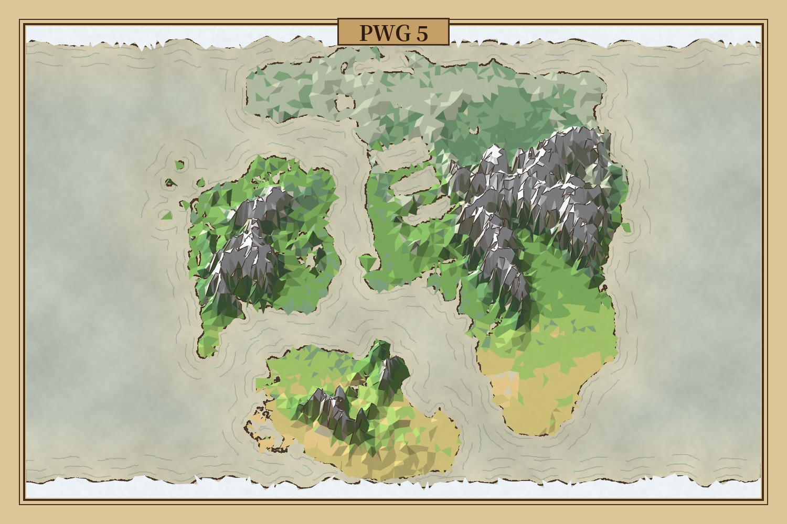
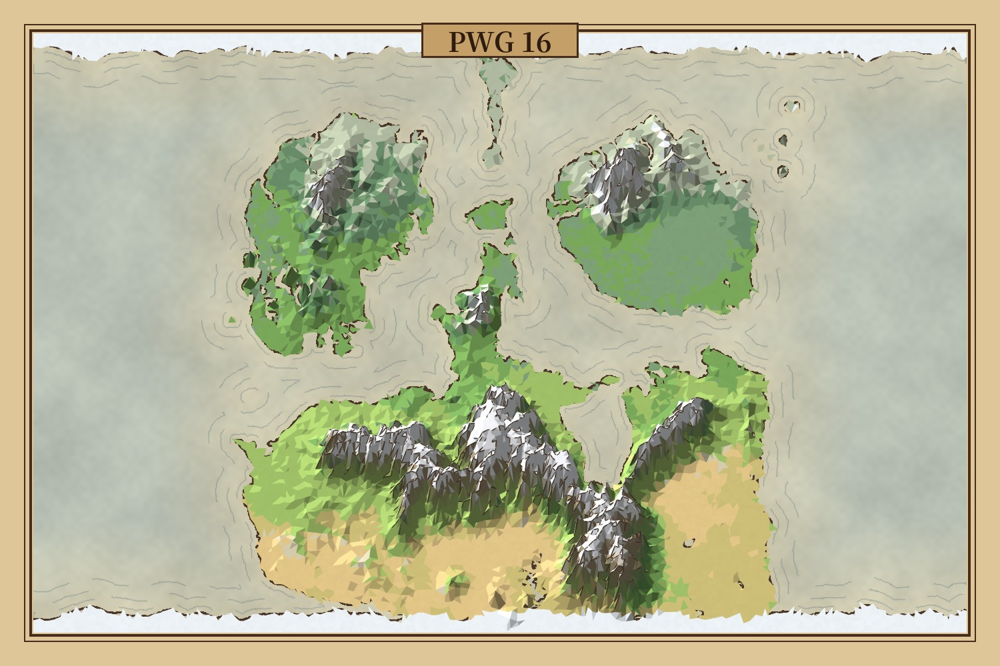
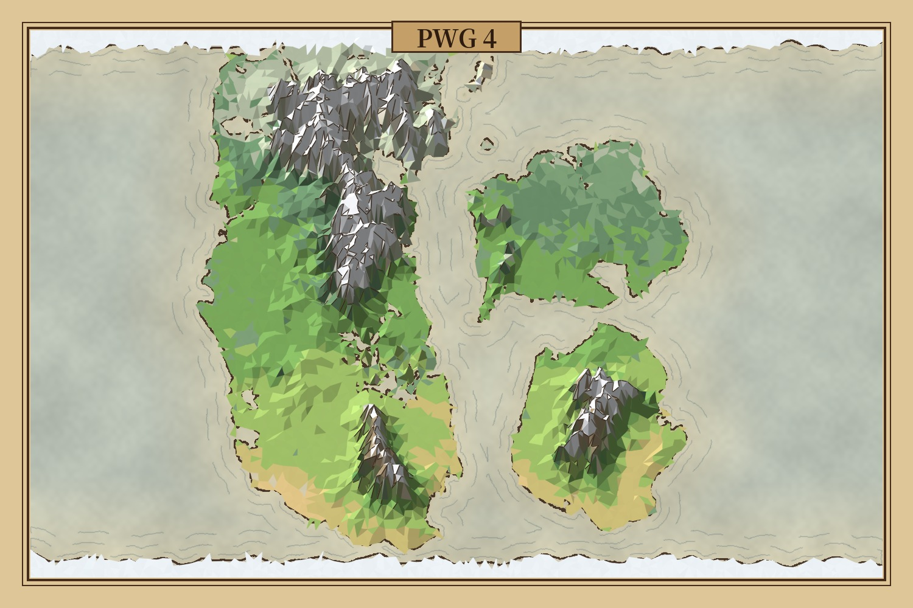
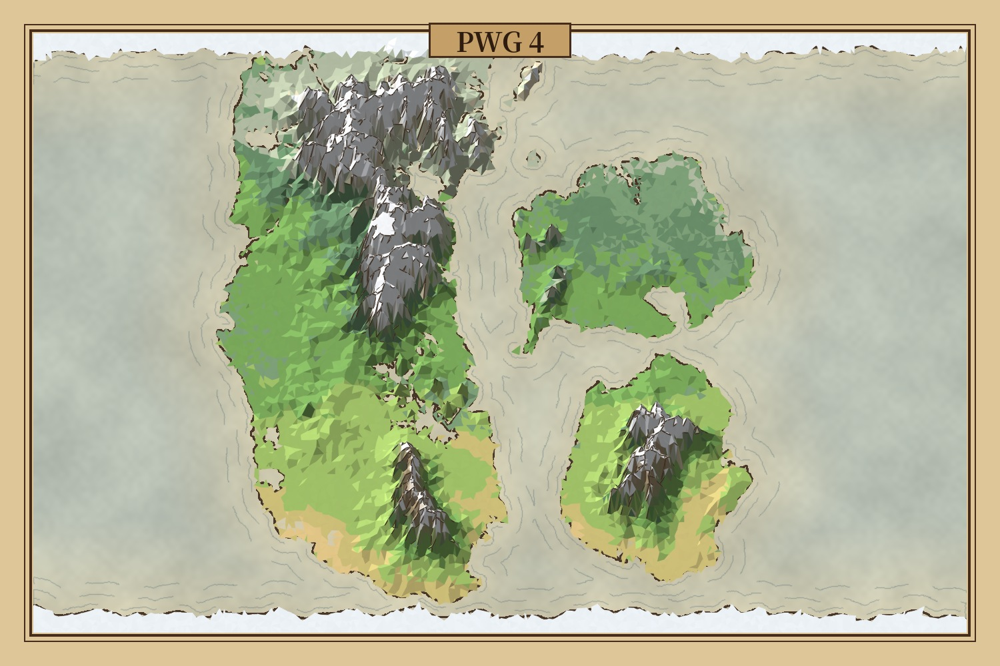

概要: 面を半分にした(mapstyle41)の逆として、面をmapstyle40よりも小さくしました(面の間隔を0.707倍=面の数は約2倍)。ほかの設定はmapstyle40と同じです。各図は上=今回、下=比較にmapstyle40・41の面の数を表にしました。
| 世界 | mapstyle41(粗い) | mapstyle40 | 今回(細かい) |
|---|---|---|---|
| seed7 | 5,020 | 9,216 | 17,334 |
| seed5 | 5,133 | 9,386 | 17,563 |
| seed16 | 4,752 | 8,857 | 16,735 |
| seed4 | 4,770 | 8,872 | 16,789 |
| seed1 | 4,766 | 8,873 | 16,746 |
描画の時間は、5世界とも約2秒(mapstyle40は約1.2秒)。
 絵番号 E165
絵番号 E165 絵番号 E175
絵番号 E175

絵番号 E166 絵番号 E176
絵番号 E176
 絵番号 E167
絵番号 E167
絵番号 E177
絵番号 E168
絵番号 E178 絵番号 E169
絵番号 E169 絵番号 E179
絵番号 E179
次: 面の細かさを、粗い(41)・中間(40)・細かい(今回)のどれにするか決めていただく。